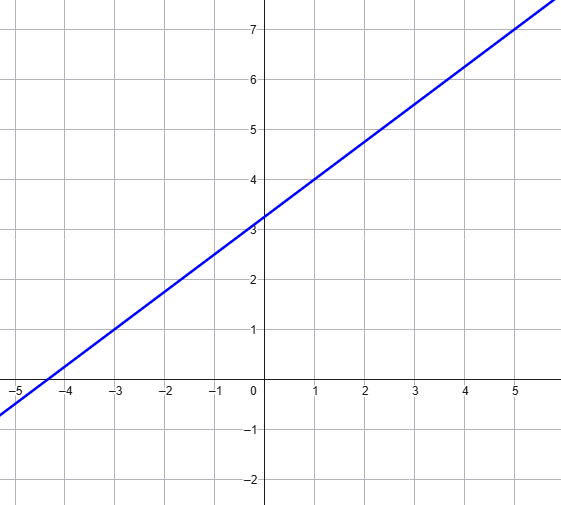

Dati i punti \(A(x_{_A}\,,\,\,y_{_A})\) e \(B(x_{_B}\,,\,\,y_{_B})\), per trovare la retta
\(r\) passante per \(A\) e \(B\)
troviamo il coefficiente angolare attraverso la formula
\[
m = \dfrac{y_{_B} - y_{_A}}{x_{_B} - x_{_A}}
\]
Troviamo il termine noto sostituendo le coordinate di uno dei due punti, ad esempio \(A\),
nell'equazione della retta.
\[
y_{_A} = m x_{_A} + q
\]
e risolvendo l'equazione rispetto all'incognita \(q\).
Esercizio
Consideriamo i punti \(A(-2\,,\,\,7)\,\,\,\) e \(\,\,\,B(3\,,\,\,\,2)\).
Scrivere l'equazione della retta \(r\) passante per i punti \(A\) e \(B\).
Soluzione
La retta \(r\) passante per \(A\) e \(B\) ha equazione
\[y = -x + 5\]
Esercizio
Consideriamo i punti \(A\left(5\,,\,\,-1\right)\,\,\,\) e \(\,\,\,B\left(-2\,,\,\,\,13\right)\).
Scrivere l'equazione della retta \(r\) passante per i punti \(A\) e \(B\).
Soluzione
La retta \(r\) passante per \(A\) e \(B\) ha equazione
\[ y = -2x + 9\]
Esercizio
Consideriamo i punti \(A(1\,,\,\,-2)\), \(\,\,\,B(5\,,\,\,\,-3)\),\(\,\,\,C(1\,,\,\,-2)\).
Stabilire se \(A\), \(B\) e \(C\) sono allineati.
Soluzione
La retta \(r\) passante per \(A\) e \(B\) ha equazione
\[y = -\dfrac{1}{4}x - \dfrac{7}{4}\]
Per controllare se il punto \(C\) appartiene alla retta \(r\) sostituiamo le
sue coordinate nell'equazione di \(r\). Si vede in questo modo che \(C\) appartiene ad \(r\),
quindi i punti sono allineati.
Esercizio
Scrivere l'equazione della retta rappresentata in grafico

Suggerimento
Il termine noto non riusciamo a stabilirlo a partire dal grafico, perché l'intersezione
tra la retta e l'asse delle \(y\) non cade sulla "griglia". Ma non ci sono problemi, ormai sappiamo
come trovarla anche senza ricorrere al grafico... pensate agli esercizi precedenti!
Soluzione
La retta ha equazione
\[
y=\frac{3}{4}x+\frac{13}{4}
\]